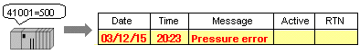
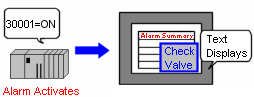
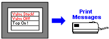
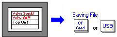

|
|
|
|
|
|
|
|
When an error or event occurs, you can display a list of alarms and events on the target machine by using the Alarm Summary and Event Summary. The Alarm Summary displays not only the alarm message, but various other information about the alarm, such as the date and time when the alarm was activated or restored. The Event Summary displays event messages, which include user actions, system error events, and system events.
For targets with a panel screen size of 200x80, each alarm or event message is displayed individually in the summary instead of in a list. The summary will also display the date and time of the alarm or event, the alarm state, the alarm or event number, and the number of alarms or events. Use the NEXT and PREV buttons to go to the next or previous alarm or event message, the ACK button to acknowledge the alarm, and the Exit button to exit the summary and return to the previous panel.
This section introduces the basic features for an Alarm Summary and Event Summary.
You can set up an alarm to activate an alarm message to appear in the Alarm Summary when a BOOL variable is turned ON or OFF.
You can set up a switch or operation button to acknowledge the alarm and do the following: change the alarm message color when the alarm is acknowledged; display the date and time when the alarm is acknowledge; both change the alarm message color and display the date and time when the alarm is acknowledged; or add a new row with the restored alarm.
For Active and History Alarm Summary, you can set the alarm summary to change alarm message colors when the alarm changes from the Active, Acknowledge (ACK), and Returned to Normal (RTN) states. For Log Alarm Summary, you can set the alarm summary to add a new row for each change in the alarm's state.
You can select from three types of Alarm Summary displays: Active, History and Log.
|
Display |
Description |
|
Active |
The Active Alarm Summary displays alarms that are in the Active, Acknowledge (ACK), and Not Acknowledged (UNACK) states. When the alarm is Returned to Normal (RTN), the alarm is cleared from the Active Alarm Summary.
|
|
History |
The History Alarm Summary displays a column for each alarm state change for an alarm message. When the alarm changes state, the alarm message continues to display on the same line. However, when an alarm changes state from RTN to active, the alarm message displays on a new row in the alarm summary. When the alarm changes state, the alarm message changes to the colors associated with that state.
|
|
Log |
The Log Alarm Summary displays a new alarm message for each change in the alarm's state.
|
The Alarm Summary displays information, such as state, variable name, and alarm group.
You can set up an operation button to perform various functions on an Event Summary, such as cursor up or down, page up or down, and delete all to remove all event messages.
You can create custom event messages using the text resource, scripts, or actions.
For alarms on an Event Summary, you can change alarm message colors when the alarm changes from the Active, Acknowledge (ACK), and Return to Normal (RTN) states.
You can select two types of Event Summary displays: History (displays historical records) and Log (displays log records). If Active is selected, no records will be shown for the event group in the Event Summary.
The Event Summary displays information, such as user name and group.
The following table describes the advanced features for an Alarm Summary and Event Summary.
|
Feature |
Details |
|
Multiple Alarm Group/Event Group/Alarm Category Display |
You can group your alarms and events so that, for example, urgent alarms appear in one Alarm Summary, and ordinary alarms appear in another Alarm Summary, and events appear in an Event Summary. You can also set up summaries with filters that can display a specific group or alarm category. See Section 16.3.1.2, Displaying Multiple Groups. |
|
Monitoring Word Addresses |
This feature is for alarms only. You can set up integer and REAL variables to trigger alarms when their values reach a specified threshold. See Section 16.3.3, Word Alarms.  |
|
Log User Operations on Variable |
This feature is for events only. You can set up a variable so that the variable can be monitored for user events listed in the event list. For example, you may want to monitor value change events for some variables. For more information on how to set up a variable for events, see Section 6.2.3.2, Data Details Tab. |
|
Action |
This feature is for alarms only. You can set up actions for each alarm, such as changing panels or displaying pop-up windows. These actions can be set up to either run when an alarm is triggered or run when the alarm is selected in the alarm summary.  |
|
|
Users can print alarm and event messages on a printer connected to the target machine. There are two ways to print: Real Time and Batch. See Section 16.3.5, Printing Alarm and Event Messages.  |
|
Alarm Sharing |
Users can share alarm groups and event groups. Alarm sharing allows you to interact with and view shared alarm and event groups from other targets on your network. For more information on alarm sharing, see Section 16.3.1.4, Remote Categories. |
|
Save to File |
You can save alarm and event messages to a .csv file on a Secondary or Optional Drive. See Section 16.3.6, Outputting Alarms and Events to a .CSV File.  |